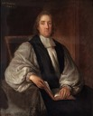
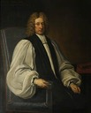
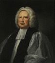
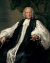
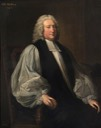
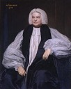
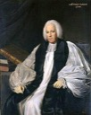
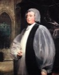

Thomas Tenison1694–1715 · 81st
William Wake1715–1737 · 82nd
John Potter1737–1747 · 83rd
Thomas Herring1747–1757 · 84th
Matthew Hutton1757–1758 · 85th
Thomas Secker1758–1768 · 86th
Frederick Cornwallis1768–1783 · 87th
John Moore1783–1805 · 88th